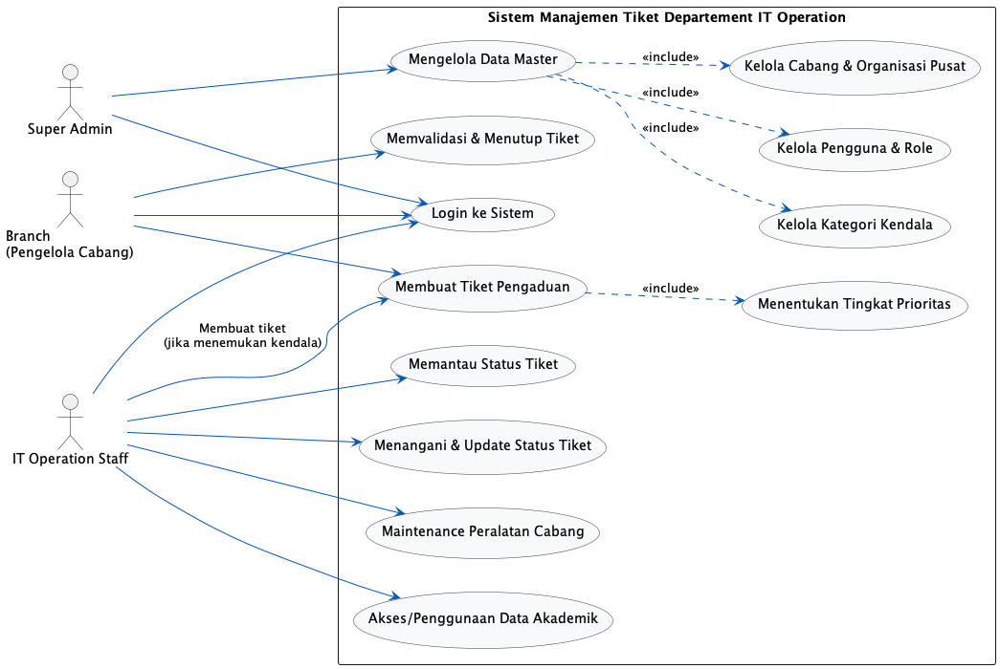
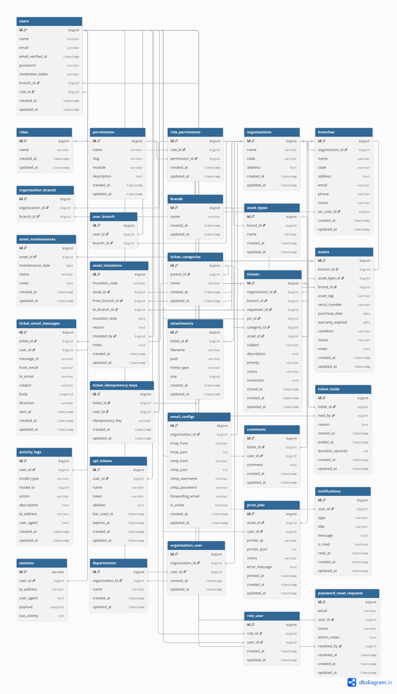
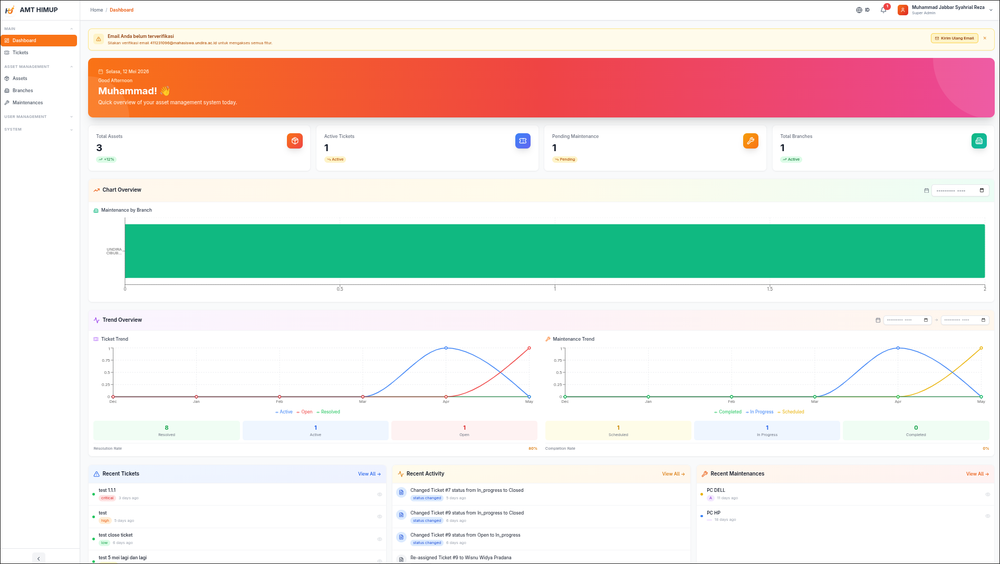
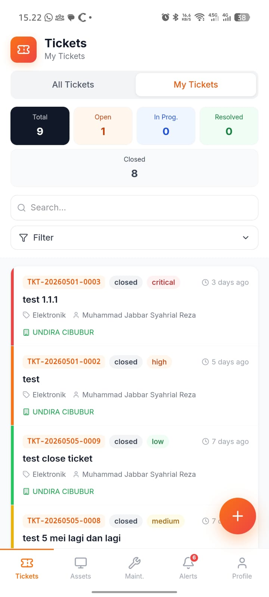

Implementasi Framework Laravel dan Solusi Mobile Khusus Field Engineer
Fokus Utama:
Manfaat:


Entitas Utama:


Fitur Engineer Lapangan:
Bertanggung jawab atas arsitektur Laravel, perancangan Database, dan API Service.
Mengembangkan aplikasi mobile menggunakan React Native/Capacitor untuk IT Engineer.
Analisis kebutuhan sistem, pembuatan dokumentasi UML, dan perancangan Wireframe.
Pengembangan sistem ini diharapkan dapat mentransformasi operasional Departemen IT Infrastructure menjadi lebih terukur, transparan, dan efisien melalui integrasi solusi Web dan Mobile.
Sesi Tanya Jawab